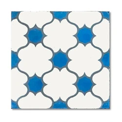

Ladrilho Hidráulico Colonial Azul
Descrição do Produto
Resgate o charme e a tradição com o Ladrilho Hidráulico Colonial Azul. Perfeito para criar composições únicas e personalizadas em pisos e paredes, tanto em áreas internas quanto externas cobertas. Sua estampa clássica adiciona um toque de elegância e história ao ambiente.
Detalhes Técnicos
- Código: LHC-003
- Dimensões por Peça: 20cm x 20cm
- Espessura: 10mm
- Material: Cerâmica prensada
- Acabamento: Fosco
- Indicação de Uso: Pisos e paredes decorativas em áreas internas e externas cobertas.
- Resistência à Manchas: Classe 5 (alta)
- Unidade de Venda: Peça ou Metro quadrado (m²)